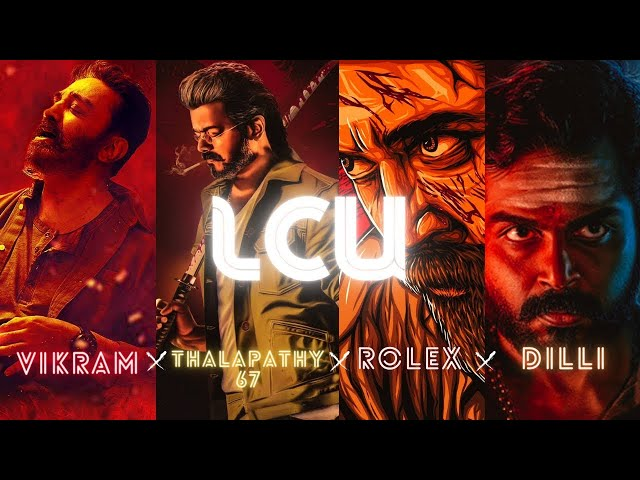

WELCOME TO LCU WORLD

HERO'S IN LCU
In a city ruled by shadows and blood, a silent storm was rising. Vikram,
once believed to be dead, lived in the dark corners of Chennai — not as a man, but as a myth.
He watched over the city, eliminating threats before they took root. Years later, Dilli — a ruthless
prisoner with a haunted past — escaped not for himself, but to protect the only pure thing in his life:
his daughter. But they weren't alone. Amar, an upright but unpredictable undercover cop, began to dig deeper
into the syndicates and stumbled upon a secret network — a ghost unit formed by Vikram. They weren’t bound by law,
but by justice. With Bejoy, the honest officer, and Dilli joining hands with Vikram’s legacy, a new rebellion sparked.
These weren’t just heroes; they were broken men with burning purpose. Together, they stood not as saviors — but
as a warning to every criminal who dared rise. The silent war had begun.
Click To Enter HERO'S World
VILLAIN'S IN LCU
The city didn’t fall in a day — it was poisoned slowly. Rolex,
the most feared name in the underworld, built his empire on death and betrayal.
With a mind as sharp as his knife, he controlled every syndicate from the shadows.
He didn’t kill for power — he killed for fun. Years ago, Anbu and Adaikalam ruled North Chennai with brute
strength and blind loyalty, but even they couldn’t match the cold chaos of Rolex. Then came Sandhanam,
a scientific genius obsessed with immortality, ready to sacrifice cities for his vision.
These weren’t just villains — they were monsters hiding in human skin. They didn’t fear law, because they owned it.
Behind every corrupt deal, every explosion, every lost life — there was a whisper: "Rolex is watching."
As the darkness spread, one thing became clear — the villains of this world weren’t afraid of dying, they
were afraid of losing control. And they would do anything to keep it.
Click To Enter VILLAIN'S World